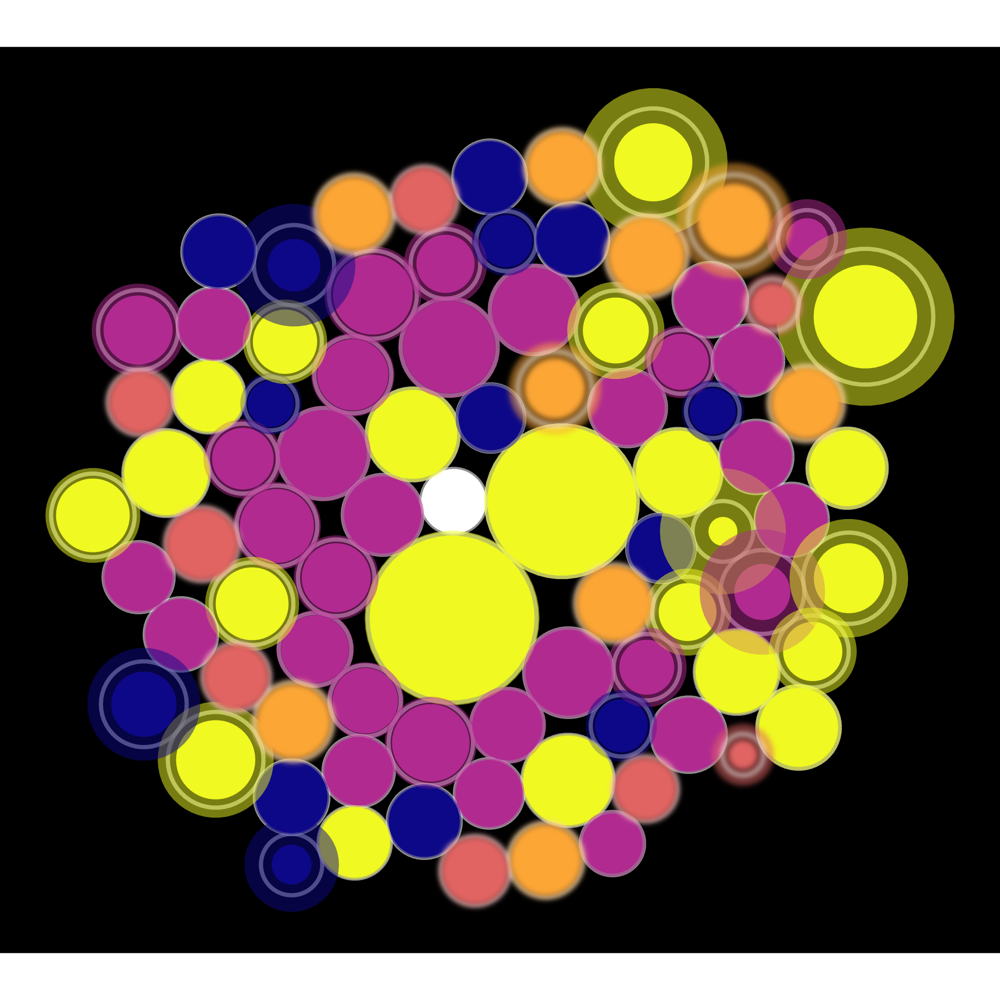
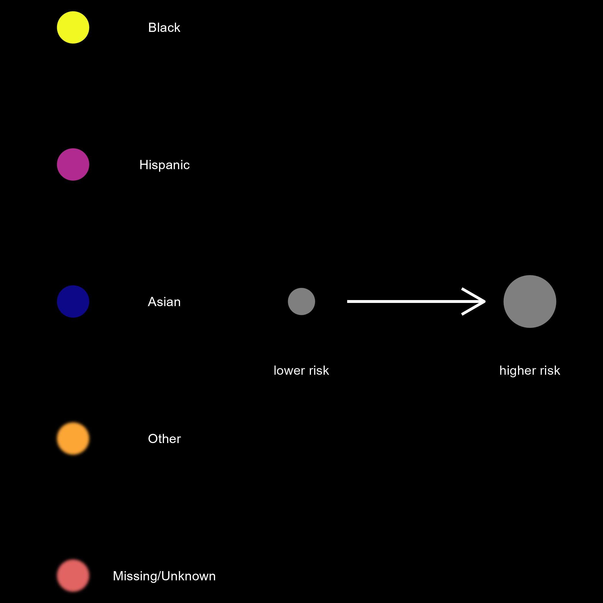
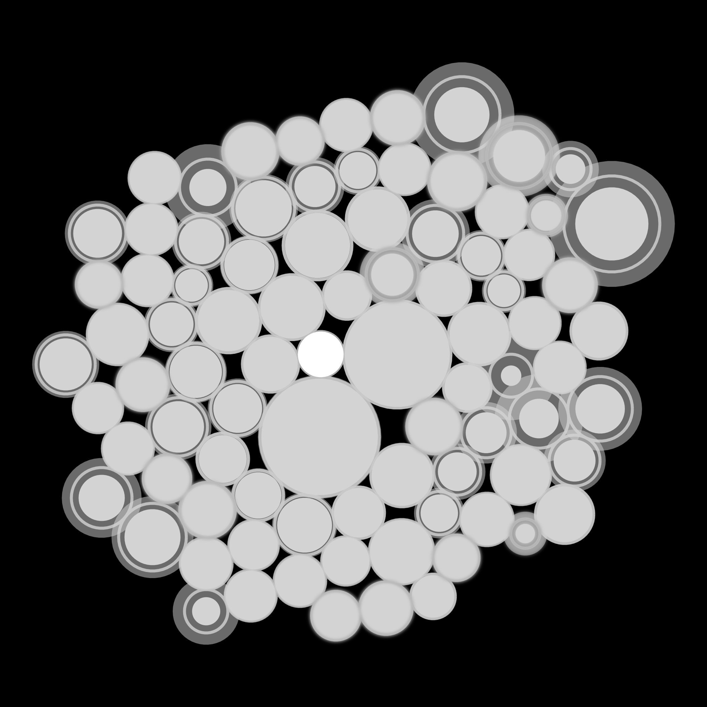

An Inconceivable Blastocyst

One of the things that struck me during our review was just how many different studies identified large racial and ethnic disparities in maternal morbidity and mortality outcomes AFTER accounting for many different “explanations” – differences in age, income, education, hospital type, geography – and measured in many different ways – blood transfusions, hysterectomy, sepsis, admission to intensive care unit, . . .
In this piece, each circle represents an estimated risk ratio for the risk of a maternal morbidity and mortality outcome; the shading around the circle represents uncertainty around that estimate. As each article we reviewed used “white” (or “White” or “Non-Hispanic White”) as the reference group, the white circle in the middle represents the risk in the referent group. The radius of each of the other circles is relative to the increased risk among other race and ethnicity groups – the larger the circle, the larger the risk. The circles that are blurred represent groups that were either of “Missing/Unknown” race and ethnicity or “Other” race and ethnicity; the blur suggests we need to refocus our microscope to get a clearer picture of the people in these groups.

Why the microscope reference? For this piece, I drew upon the imagery of a blastocyst. By the 5th or 6th day after fertilization, an embryo is in the blastocyst stage (a rapidly dividing ball of cells).

In the data art, each circle represents the risk of a bad outcome and together the circles accumulate and speak to the volume of evidence that may seem inconceivable, yet is undeniable. Hover your mouse over a circle to see more information, or use the icons in the upper right corner to zoom in and out: